Planche 1 - 16 idles Choisissez un numero par heros (menu de chaque fiche).
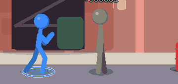
1 Garde ouverte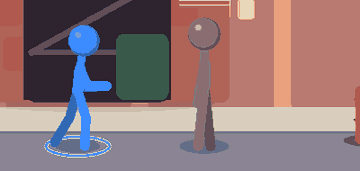
2 Mains basses detendues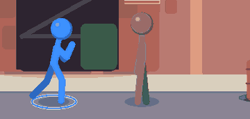
3 Boxeur a rebond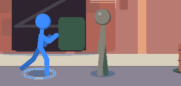
4 Karate de profil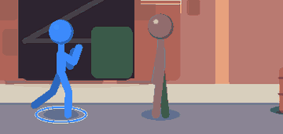
5 Muay thai haute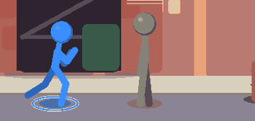
6 Souple et flechi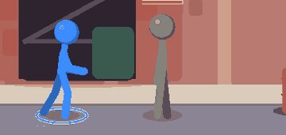
7 Debout naturel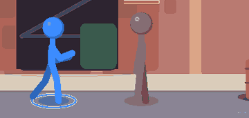
8 Poids sur l'arriere9 Ginga large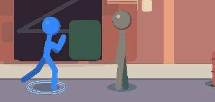
10 Bras ouverts11 Poings mi-hauteur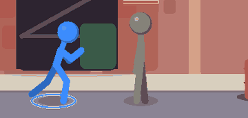
12 Lutteur penche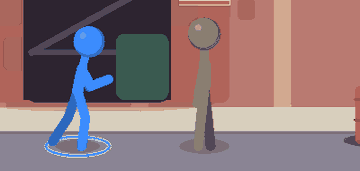
13 Bras replies, attente14 Hanche ouverte, appui avant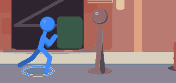
15 Garde basse fendue16 Duelliste, une main devantPlanche 2 - 16 gardes 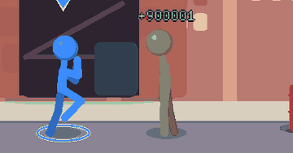
1 Avant-bras verticaux2 Garde de boxe (voulue)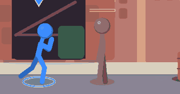
3 Garde basse, ventre couvert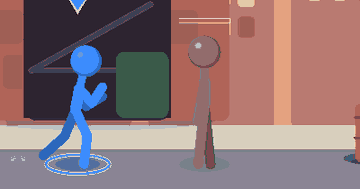
4 Un bras haut, un bas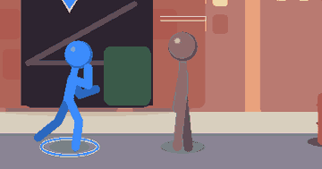
5 Paumes ouvertes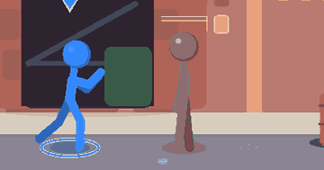
6 Karate mi-hauteur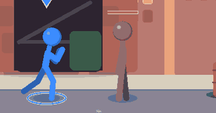
7 Bras en X devant le torse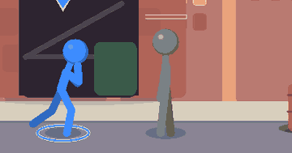
8 Epaule avant, menton rentre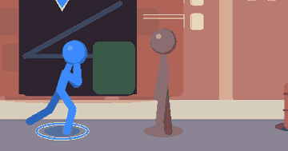
9 Garde ecrasee, genoux flechis10 Avant-bras horizontaux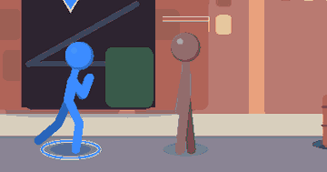
11 Bouclier de coudes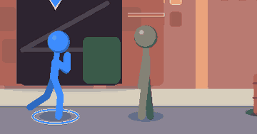
12 Garde Muay thai haute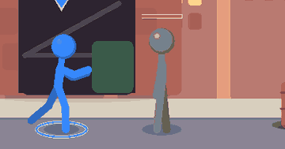
13 Mains en avant, recul d'appui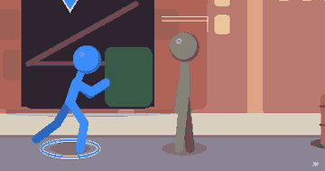
14 Garde de lutteur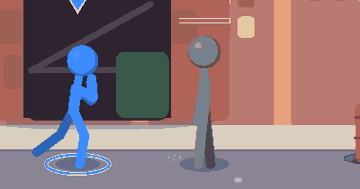
15 Garde fermee, buste cambre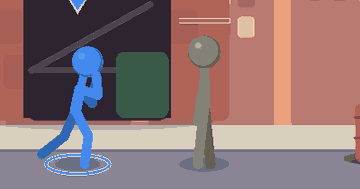
16 Garde en triangle
Kaze Rushdown polyvalent
« Etre le plus rapide du service : tout finir avant 18 h, sans jamais s'arreter. »
Forces Vitesse, enchainements valides, entree en melee par la course Faiblesses Peu de points de vie, aucune arme de zone Rythme Marche vive, course longue, saut haut et nerveuxvaleurs de reference (Kaze n'est pas touche) Garde Avant-bras verticaux, sur la pointe des pieds Idle Voute et fatigue, puis se redresse d'un coup en garde de kickboxeur Victoire Poing leve, soupir de soulagement Defaite Genou a terre, dossier lache 3 gestes signature Jab, genou, talons / Lanceur du dragon / Fouet en trois
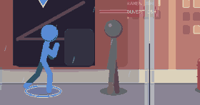
Idle 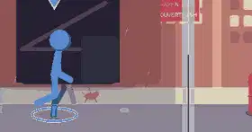
Marche 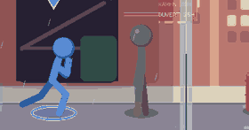
Garde 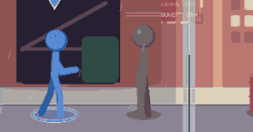
Victoire Gestes signature et special B Jab, genou, talons 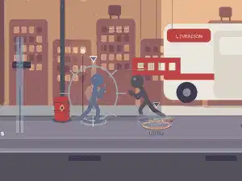
Lanceur du dragon 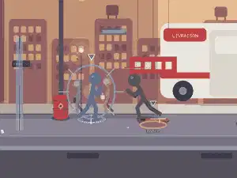
Fouet en trois 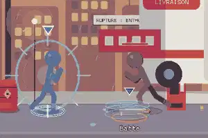
Special B Idle (planche) 1 - Garde ouverte 2 - Mains basses detendues 3 - Boxeur a rebond 4 - Karate de profil 5 - Muay thai haute 6 - Souple et flechi 7 - Debout naturel 8 - Poids sur l'arriere 9 - Ginga large 10 - Bras ouverts 11 - Poings mi-hauteur 12 - Lutteur penche 13 - Bras replies, attente 14 - Hanche ouverte, appui avant 15 - Garde basse fendue 16 - Duelliste, une main devant Garde (planche) 1 - Avant-bras verticaux 2 - Garde de boxe (voulue) 3 - Garde basse, ventre couvert 4 - Un bras haut, un bas 5 - Paumes ouvertes 6 - Karate mi-hauteur 7 - Bras en X devant le torse 8 - Epaule avant, menton rentre 9 - Garde ecrasee, genoux flechis 10 - Avant-bras horizontaux 11 - Bouclier de coudes 12 - Garde Muay thai haute 13 - Mains en avant, recul d'appui 14 - Garde de lutteur 15 - Garde fermee, buste cambre 16 - Garde en triangle
Valider A refaire
Gorr Grappler lourd
« Ecraser la reunion qui n'en finit pas, d'un seul coup de poing sur la table. »
Forces Degats, saisies, brise-garde, vie Faiblesses Lent, portee courte, recuperation longue Rythme Pas lourds, saut bas et plombe, course en beliervitesse 2.3, course x1.5, saut 7.8, gravite 0.55, anim 0.7 Garde Bras croises devant le torse, epaules rentrees Idle Dos large, bras ballants, tete rentree, souffle puissant Victoire Bat sa poitrine, rugit Defaite S'affaisse sur un genou, poings serres 3 gestes signature Seisme / Charge au lariat / Prise et projection
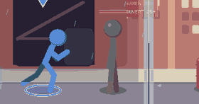
Idle Marche 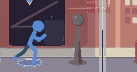
Garde 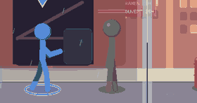
Victoire Gestes signature et special B 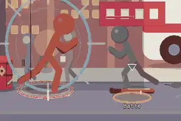
Seisme 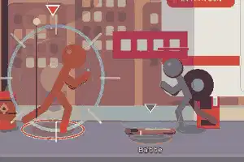
Charge au lariat 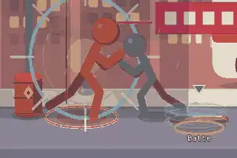
Prise et projection 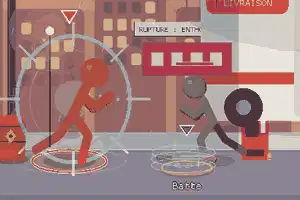
Special B Idle (planche) 1 - Garde ouverte 2 - Mains basses detendues 3 - Boxeur a rebond 4 - Karate de profil 5 - Muay thai haute 6 - Souple et flechi 7 - Debout naturel 8 - Poids sur l'arriere 9 - Ginga large 10 - Bras ouverts 11 - Poings mi-hauteur 12 - Lutteur penche 13 - Bras replies, attente 14 - Hanche ouverte, appui avant 15 - Garde basse fendue 16 - Duelliste, une main devant Garde (planche) 1 - Avant-bras verticaux 2 - Garde de boxe (voulue) 3 - Garde basse, ventre couvert 4 - Un bras haut, un bas 5 - Paumes ouvertes 6 - Karate mi-hauteur 7 - Bras en X devant le torse 8 - Epaule avant, menton rentre 9 - Garde ecrasee, genoux flechis 10 - Avant-bras horizontaux 11 - Bouclier de coudes 12 - Garde Muay thai haute 13 - Mains en avant, recul d'appui 14 - Garde de lutteur 15 - Garde fermee, buste cambre 16 - Garde en triangle
Valider A refaire
Sora Duelliste / contre
« Un seul geste, parfaitement net, qui tranche le dossier dans les formes. »
Forces Allonge, contre apres garde ou esquive, coup net Faiblesses Peu de vie, pas de zone, punissable s'il rate Rythme Pas glisses sans rebond, course fluide, saut mesurevitesse 3.3, course x1.7, saut 9.2, gravite 0.50, anim 1.0 Garde Dos tres droit, main pres du fourreau Idle Immobile, un bras tendu en pointe, respiration calme Victoire Salue, referme le fourreau Defaite Un genou a terre, tete haute 3 gestes signature Brise-garde / Coupe de charge / Taille montante
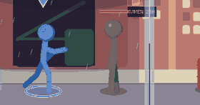
Idle 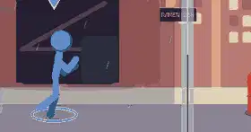
Marche 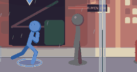
Garde 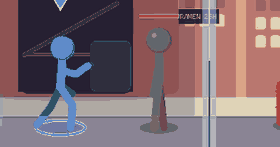
Victoire Gestes signature et special B 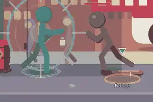
Brise-garde 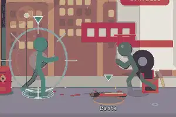
Coupe de charge 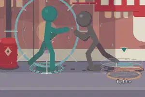
Taille montante 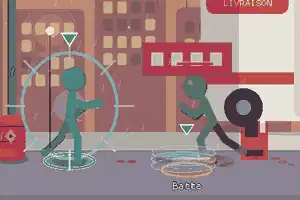
Special B Idle (planche) 1 - Garde ouverte 2 - Mains basses detendues 3 - Boxeur a rebond 4 - Karate de profil 5 - Muay thai haute 6 - Souple et flechi 7 - Debout naturel 8 - Poids sur l'arriere 9 - Ginga large 10 - Bras ouverts 11 - Poings mi-hauteur 12 - Lutteur penche 13 - Bras replies, attente 14 - Hanche ouverte, appui avant 15 - Garde basse fendue 16 - Duelliste, une main devant Garde (planche) 1 - Avant-bras verticaux 2 - Garde de boxe (voulue) 3 - Garde basse, ventre couvert 4 - Un bras haut, un bas 5 - Paumes ouvertes 6 - Karate mi-hauteur 7 - Bras en X devant le torse 8 - Epaule avant, menton rentre 9 - Garde ecrasee, genoux flechis 10 - Avant-bras horizontaux 11 - Bouclier de coudes 12 - Garde Muay thai haute 13 - Mains en avant, recul d'appui 14 - Garde de lutteur 15 - Garde fermee, buste cambre 16 - Garde en triangle
Valider A refaire
Tetsu Contre / tank
« Ne pas bouger : laisser venir, encaisser, et renvoyer une seule fois, tres fort. »
Forces Vie, defense, contre-attaque, garde active Faiblesses Tres lent, saut court, facilement contourne Rythme Pas rares et lourds, course courte, saut basvitesse 2.7, course x1.35, saut 8.0, gravite 0.55, anim 0.85 Garde Poings fermes au menton, menton rentre, statue Idle Jambes ecartees, poings serres, sautille a peine Victoire Croise les bras, ne bouge pas Defaite Reste debout un instant, puis s'incline 3 gestes signature Fouet d'acier / Direct de charge / Coude d'acier
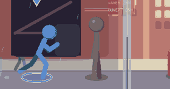
Idle Marche 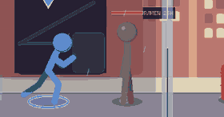
Garde Victoire Gestes signature et special B Fouet d'acier Direct de charge Coude d'acier Special B
Idle (planche) 1 - Garde ouverte 2 - Mains basses detendues 3 - Boxeur a rebond 4 - Karate de profil 5 - Muay thai haute 6 - Souple et flechi 7 - Debout naturel 8 - Poids sur l'arriere 9 - Ginga large 10 - Bras ouverts 11 - Poings mi-hauteur 12 - Lutteur penche 13 - Bras replies, attente 14 - Hanche ouverte, appui avant 15 - Garde basse fendue 16 - Duelliste, une main devant Garde (planche) 1 - Avant-bras verticaux 2 - Garde de boxe (voulue) 3 - Garde basse, ventre couvert 4 - Un bras haut, un bas 5 - Paumes ouvertes 6 - Karate mi-hauteur 7 - Bras en X devant le torse 8 - Epaule avant, menton rentre 9 - Garde ecrasee, genoux flechis 10 - Avant-bras horizontaux 11 - Bouclier de coudes 12 - Garde Muay thai haute 13 - Mains en avant, recul d'appui 14 - Garde de lutteur 15 - Garde fermee, buste cambre 16 - Garde en triangle
Valider A refaire
Nova Zoner (tirs d'energie)
« Etre brillant a distance : tout resoudre par un message, sans toucher personne. »
Forces Tirs, jauge de Ki rapide, controle de la distance Faiblesses Fragile, corps a corps faible Rythme Glisse a quelques cm du sol, saut flottant et longvitesse 3.2, course x1.6, saut 9.0, gravite 0.42, anim 1.1 Garde Paumes ouvertes qui orbitent Idle Decontracte, une main dans la poche, l'autre qui orbite Victoire Envoie le message, un clin d'oeil Defaite Flotte puis se pose, vide 3 gestes signature Colonne de Ki / Paume de Ki / Comete plongeante
Idle Marche Garde Victoire
Gestes signature et special B Colonne de Ki Paume de Ki Comete plongeante Special B
Idle (planche) 1 - Garde ouverte 2 - Mains basses detendues 3 - Boxeur a rebond 4 - Karate de profil 5 - Muay thai haute 6 - Souple et flechi 7 - Debout naturel 8 - Poids sur l'arriere 9 - Ginga large 10 - Bras ouverts 11 - Poings mi-hauteur 12 - Lutteur penche 13 - Bras replies, attente 14 - Hanche ouverte, appui avant 15 - Garde basse fendue 16 - Duelliste, une main devant Garde (planche) 1 - Avant-bras verticaux 2 - Garde de boxe (voulue) 3 - Garde basse, ventre couvert 4 - Un bras haut, un bas 5 - Paumes ouvertes 6 - Karate mi-hauteur 7 - Bras en X devant le torse 8 - Epaule avant, menton rentre 9 - Garde ecrasee, genoux flechis 10 - Avant-bras horizontaux 11 - Bouclier de coudes 12 - Garde Muay thai haute 13 - Mains en avant, recul d'appui 14 - Garde de lutteur 15 - Garde fermee, buste cambre 16 - Garde en triangle
Valider A refaire
Kage Technique / piegeur d'ombre
« Disparaitre, surgir dans le dos, repartir avant qu'on ait compris. »
Forces Vitesse maximale, recuperation courte, attaques par le dos Faiblesses Tres fragile, degats faibles Rythme Pas feutres, course tres rapide, saut vif et hautvitesse 3.9, course x2.0, saut 10.0, gravite 0.52, anim 1.55 Garde Accroupi, epaules basses, regard de cote Idle Tres bas, bras arriere cache, aux aguets Victoire Disparait dans l'ombre, reapparait Defaite Se replie en boule 3 gestes signature Ushiro-geri / Mawashi de l'ombre / Chute du faucon
Idle Marche Garde Victoire Gestes signature et special B Ushiro-geri Mawashi de l'ombre Chute du faucon Special B
Idle (planche) 1 - Garde ouverte 2 - Mains basses detendues 3 - Boxeur a rebond 4 - Karate de profil 5 - Muay thai haute 6 - Souple et flechi 7 - Debout naturel 8 - Poids sur l'arriere 9 - Ginga large 10 - Bras ouverts 11 - Poings mi-hauteur 12 - Lutteur penche 13 - Bras replies, attente 14 - Hanche ouverte, appui avant 15 - Garde basse fendue 16 - Duelliste, une main devant Garde (planche) 1 - Avant-bras verticaux 2 - Garde de boxe (voulue) 3 - Garde basse, ventre couvert 4 - Un bras haut, un bas 5 - Paumes ouvertes 6 - Karate mi-hauteur 7 - Bras en X devant le torse 8 - Epaule avant, menton rentre 9 - Garde ecrasee, genoux flechis 10 - Avant-bras horizontaux 11 - Bouclier de coudes 12 - Garde Muay thai haute 13 - Mains en avant, recul d'appui 14 - Garde de lutteur 15 - Garde fermee, buste cambre 16 - Garde en triangle
Valider A refaire
Bo Zoner de portee (baton)
« Garder tout le couloir sous son manche a balai, sans jamais se presser. »
Forces Portee, balayages, repousse Faiblesses Lent a se retourner, vulnerable de pres Rythme Pas mesures rythmes par le baton, saut calmevitesse 2.9, course x1.5, saut 8.6, gravite 0.50, anim 0.95 Garde Baton tenu a deux mains, appuis larges Idle Appuye sur son baton, buste serein Victoire Plante le baton, hoche la tete Defaite S'appuie lourdement sur le manche 3 gestes signature Estoc du baton / Pied fendant / Revers pivot du baton
Idle Marche Garde Victoire
Gestes signature et special B Estoc du baton Pied fendant Revers pivot du baton Special B
Idle (planche) 1 - Garde ouverte 2 - Mains basses detendues 3 - Boxeur a rebond 4 - Karate de profil 5 - Muay thai haute 6 - Souple et flechi 7 - Debout naturel 8 - Poids sur l'arriere 9 - Ginga large 10 - Bras ouverts 11 - Poings mi-hauteur 12 - Lutteur penche 13 - Bras replies, attente 14 - Hanche ouverte, appui avant 15 - Garde basse fendue 16 - Duelliste, une main devant Garde (planche) 1 - Avant-bras verticaux 2 - Garde de boxe (voulue) 3 - Garde basse, ventre couvert 4 - Un bras haut, un bas 5 - Paumes ouvertes 6 - Karate mi-hauteur 7 - Bras en X devant le torse 8 - Epaule avant, menton rentre 9 - Garde ecrasee, genoux flechis 10 - Avant-bras horizontaux 11 - Bouclier de coudes 12 - Garde Muay thai haute 13 - Mains en avant, recul d'appui 14 - Garde de lutteur 15 - Garde fermee, buste cambre 16 - Garde en triangle
Valider A refaire
Piege Technique / poseur de pieges
« Que l'adversaire marche tout seul sur le piege que j'ai pose. »
Forces Pieges au sol, controle d'espace, crochets Faiblesses Lent a se mettre en place, passif Rythme Pas prudents, course de belier, saut moyenvitesse 3.2, course x1.7, saut 9.0, gravite 0.55, anim 1.15 Garde Accroupi, mains basses, aux aguets Idle Accroupi, regarde le sol, ajuste un collet Victoire Declenche un dernier piege, sourit Defaite Tombe dans son propre filet 3 gestes signature Chute du filet / Lariat du traqueur / Ressort a loup
Idle Marche Garde Victoire
Gestes signature et special B Chute du filet Lariat du traqueur Ressort a loup Special B
Idle (planche) 1 - Garde ouverte 2 - Mains basses detendues 3 - Boxeur a rebond 4 - Karate de profil 5 - Muay thai haute 6 - Souple et flechi 7 - Debout naturel 8 - Poids sur l'arriere 9 - Ginga large 10 - Bras ouverts 11 - Poings mi-hauteur 12 - Lutteur penche 13 - Bras replies, attente 14 - Hanche ouverte, appui avant 15 - Garde basse fendue 16 - Duelliste, une main devant Garde (planche) 1 - Avant-bras verticaux 2 - Garde de boxe (voulue) 3 - Garde basse, ventre couvert 4 - Un bras haut, un bas 5 - Paumes ouvertes 6 - Karate mi-hauteur 7 - Bras en X devant le torse 8 - Epaule avant, menton rentre 9 - Garde ecrasee, genoux flechis 10 - Avant-bras horizontaux 11 - Bouclier de coudes 12 - Garde Muay thai haute 13 - Mains en avant, recul d'appui 14 - Garde de lutteur 15 - Garde fermee, buste cambre 16 - Garde en triangle
Valider A refaire
Zui Imprevisible / contre
« Gagner par hasard, en titubant, sans avoir rien vu venir. »
Forces Esquives molles, coups a hauteurs variables, contre en esquive Faiblesses Imprecis, rythme irregulier Rythme Zigzag, chancelle sans tomber, saut mouvitesse 3.0, course x1.5, saut 8.8, gravite 0.50, anim 0.95 Garde Bras ballants qui se couvrent par hasard Idle Tangue, gourde a la bouche, jambes molles Victoire Leve la gourde, trebuche Defaite S'endort sur place 3 gestes signature Moulinet de la gourde / Poing de l'ivrogne / Hoquet montant
Idle Marche Garde Victoire Gestes signature et special B Moulinet de la gourde Poing de l'ivrogne Hoquet montant Special B
Idle (planche) 1 - Garde ouverte 2 - Mains basses detendues 3 - Boxeur a rebond 4 - Karate de profil 5 - Muay thai haute 6 - Souple et flechi 7 - Debout naturel 8 - Poids sur l'arriere 9 - Ginga large 10 - Bras ouverts 11 - Poings mi-hauteur 12 - Lutteur penche 13 - Bras replies, attente 14 - Hanche ouverte, appui avant 15 - Garde basse fendue 16 - Duelliste, une main devant Garde (planche) 1 - Avant-bras verticaux 2 - Garde de boxe (voulue) 3 - Garde basse, ventre couvert 4 - Un bras haut, un bas 5 - Paumes ouvertes 6 - Karate mi-hauteur 7 - Bras en X devant le torse 8 - Epaule avant, menton rentre 9 - Garde ecrasee, genoux flechis 10 - Avant-bras horizontaux 11 - Bouclier de coudes 12 - Garde Muay thai haute 13 - Mains en avant, recul d'appui 14 - Garde de lutteur 15 - Garde fermee, buste cambre 16 - Garde en triangle
Valider A refaire
Yume Controle / defense flottante
« Cinq minutes de plus : se battre pour pouvoir enfin fermer les yeux. »
Forces Barriere de Ki, coups ronds, saut flottant Faiblesses Degats moderes, gestes lents a armer Rythme Flotte, baille, ralentit puis accelere ; saut long et legervitesse 3.2, course x1.4, saut 9.2, gravite 0.40, anim 0.9 Garde Ours serre contre la poitrine, tete penchee Idle Se balance, paupieres lourdes, ours contre la poitrine Victoire Se couche sur l'oreiller Defaite S'endort 3 gestes signature Oreiller droit / Bataille d'oreillers / Pantoufle marteau
Idle Marche Garde Victoire
Gestes signature et special B Oreiller droit Bataille d'oreillers Pantoufle marteau Special B
Idle (planche) 1 - Garde ouverte 2 - Mains basses detendues 3 - Boxeur a rebond 4 - Karate de profil 5 - Muay thai haute 6 - Souple et flechi 7 - Debout naturel 8 - Poids sur l'arriere 9 - Ginga large 10 - Bras ouverts 11 - Poings mi-hauteur 12 - Lutteur penche 13 - Bras replies, attente 14 - Hanche ouverte, appui avant 15 - Garde basse fendue 16 - Duelliste, une main devant Garde (planche) 1 - Avant-bras verticaux 2 - Garde de boxe (voulue) 3 - Garde basse, ventre couvert 4 - Un bras haut, un bas 5 - Paumes ouvertes 6 - Karate mi-hauteur 7 - Bras en X devant le torse 8 - Epaule avant, menton rentre 9 - Garde ecrasee, genoux flechis 10 - Avant-bras horizontaux 11 - Bouclier de coudes 12 - Garde Muay thai haute 13 - Mains en avant, recul d'appui 14 - Garde de lutteur 15 - Garde fermee, buste cambre 16 - Garde en triangle
Valider A refaire